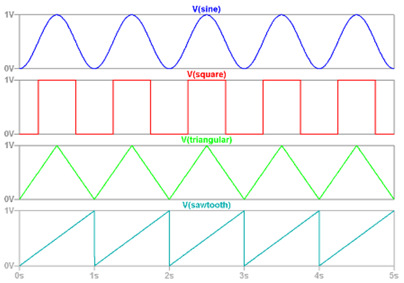
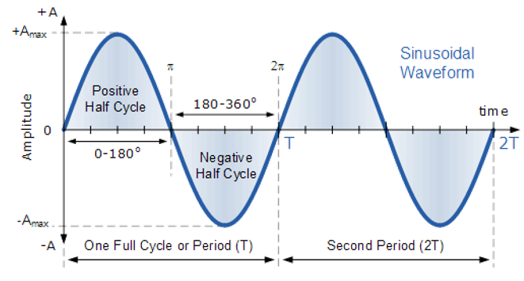

Continuous Time and Discrete Time
Continuous (CT): Analog, defined in all instants of time s(t)
Discrete (DT): a continuous signal sampled to intervals of time s(n⋅TS)
Periodic and Aperiodic
Periodic: repeated after time TO(CT), or number of samples N (e.g. sine, square, sawtooth)
Formulae:
- continuous signals: x(t)=x(t+TO)
- discrete signals: x(n)=x(n+N)

Aperiodic: a signal exhibiting no repetition
s(t)=A⋅cos(2π⋅FC⋅t+ϕ) or s(t)=A⋅sin(2π⋅FC⋅t+ϕ)
- A: the amplitude of the wave in Volt
- FC: frequency of the wave in Hertz
- TC=1/FC: period of the wave in seconds
- ϕ: phase of the wave, measured in degrees/rad
